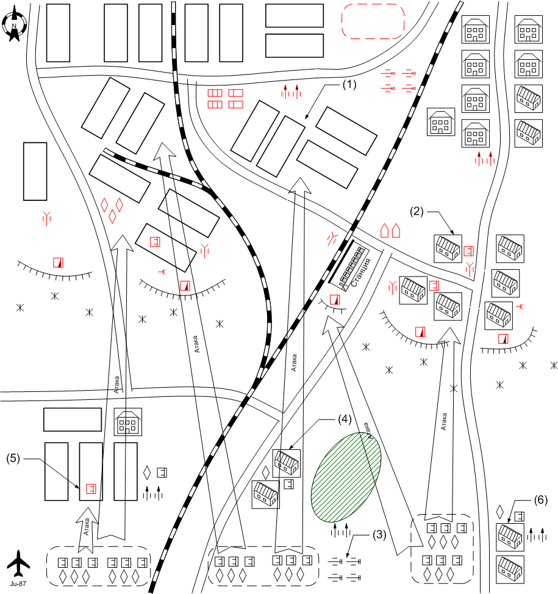

Graphics
Assets
Management
By Alexander Valencia
27 июня 2003

Скриптовый
ролик.
При старте. Немецкий штурмовой взвод атакует здание, где обороняется наша пехота. Наших сносят.
Войска
игрока.
С какими
вступает:
AFV: 2 [ BA-20
]
Light Tank 2 [ T-26 ]
Medium Tank: 1 [ T-34 ]
Anti-Tank Gun: 6 [45-mm_M-37_(53-K) ]
Field Artillery: 4 [ 122mm_M-30 ]
Anti-Aircraft Gun: 4 [37-mm_61-K ]
Supply Truck: 2 [ ZIS-5V_Engineering ]
Recon Plane: 1 [ Po-2 ]
Приданное:
Main Squad: 10 [ USSR Main 1941 ]
Anti-Tank Squad: 2 [ USSR Anti-Tank 1941 ]
Подкрепления:
1.
Main Squad: 2 [ USSR Main
1941 ]
2.
Anti-Tank Squad: 1 [ USSR
Anti-Tank 1941 ]
3.
Assault Squad: 1 [ USSR
Assault 1941 ]
4.
Light Tank: 2 [ T-26 ]
Войска союзного AI.
нет.
Войска
противника.
Field Artillery: 4 [ 10-cm_K18 ]
Anti-Aircraft Gun: 4 [ 2-cm_FlaK30/38 ], 2 [ 8.8-cm_FlaK18
]
Bomber: 2 [ Ju-87D1 ]
Medium Tank: 3 [ Pz.Kpfw IV.Ausf_D ]
Light Tank: 3 [Pz.Kpfw_III.Ausf_J ]
Main Squad: 7 [ German Squad 1941 ]
Подкрепения:
1.
Light Tank: 2 [
Pz.Kpfw_II.Ausf_F ], 2 [Pz.Kpfw_III.Ausf_J ]
Main Squad: 2 [ German Squad 1941
]
2.
Medium Tank: 2 [ Pz.Kpfw
IV.Ausf_D ]
Main Squad: 2 [ German Squad 1941
]
Преимущества игрока: нет.
Преимущества противника: постоянные подкрепления.
Какую информацию
увидит игрок при выборе этой миссии, какой бонус получит игрок по
прохождению.
Миссия обязательна для прохождения.
Бонус – переход к следующей миссии.
Основное
задание.
Захватить все ключевые точки и уничтожить артиллерию противника.
Подзадания:
1.1.
Уничтожить дальнобойную артиллерию противника
(3)
1.2.
Захватить южную деревню
(4)
Что даёт:
Противник перестаёт получать подкрепления на данном
участке.
1.3.
Захватить завод (5)
Что даёт:
Противник перестаёт получать подкрепления на данном
участке.
1.4.
Захватить деревню на юго-востоке
(6)
Что даёт:
Противник перестаёт получать подкрепления на данном
участке.
Дополнительное
задание.
Не дать
противнику захватить деревню и завод.
Подзадания:
2.1. Защитить завод
(1)
2.2. Защитить деревню (2)
Альтернативный вариант миссии: Основное задание можно сделать необязательным и сделать только оборону (типа продержаться 30 минут).
Прохождение:
Пазловость в этой миссии отсутствует. Эта миссия - обучение игрока
пользоваться подкреплениями.
Необходимо удержать завод (1) и деревню (2). Игрок может делать это самыми разными способами. Так как есть supply truck, можно положить мины. Противник периодически посылает по разным направлениям войска. У игрока тоже приходят подкрепления. У игрока есть выбор: брать противотанковые средства (Anti-Tank Squad), пехоту, штурмовой отряд или лёгкие танки. Игрок будет выбирать подкрепления необходимые на данный момент (оборона, атака, штурм ключевой точки).
После захвата каждой ключевой точки противнику перестают подходить подкрепления.
В случае захвата завода (1) или деревни (2) противником игрок проигрывает.